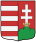
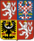
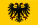
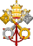

Magyar Királyság
Cseh Királyság
Német-római Birodalom
Bajor Hercegség
Pápai állam
Lengyel Királyság
Szlovénia szlovének
Szemben álló erők:
kb. 25 000– 40 000 fő
magyarok
horvátok
spanyolok
németek
csehek
lengyelek
pápai zsoldosok
85 ágyú
Veszteségek:
16-24 000 halott
16 zászlósúr
5 püspök
A magyar király
Parancsnokok:
II. Lajos
király †
Báthori
István nádor
Tomori Pál
érsek †
Szapolyai
György gróf †
Bakith Pál
despota
Radics Pál
bán †
Oszmán Birodalom
Krími Tatár Kánság
Szemben álló erők:
55 000–75 000 fő
anatóliai
ruméliai
krími tatár
160 ágyú
Veszteségek:
kb. 1 500 fő
Parancsnokok:
I. Szulejmán
szultán
Malkoçoğlu
Bali bég
Pargali
Ibrahim nagyvezír
Gázi Huszrev
bég